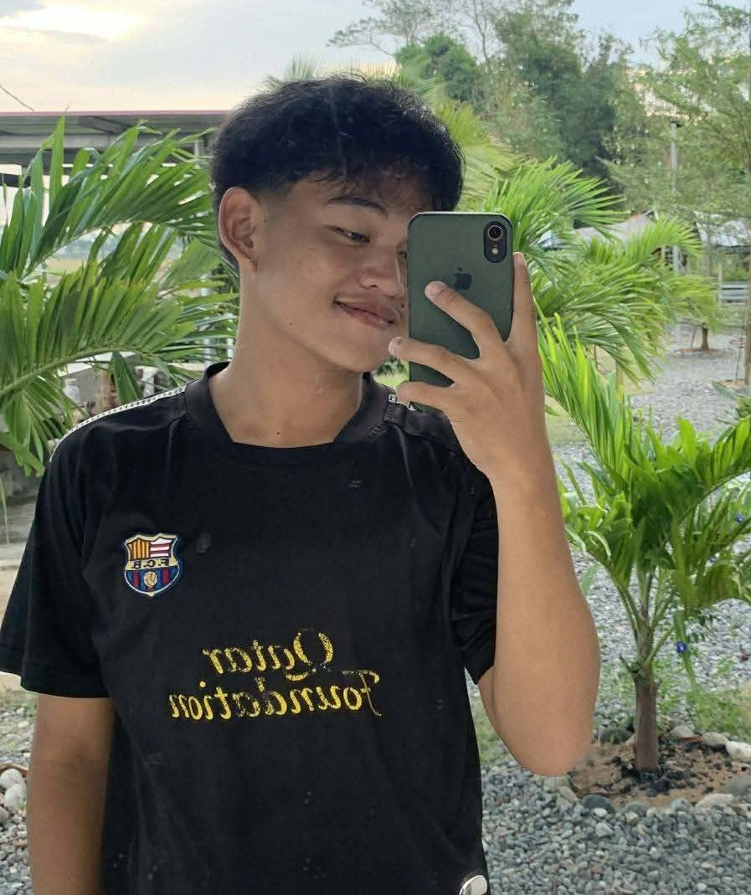

★ My Goals
My goal is to finish my degree, improve my programming skills, and become a skilled IT professional in the future.
MISSION: BUILD MY FUTURE
Hello, I'm
I am Emmanuel J. Pregillana, a Bachelor of Science in Information Technology student at the University of Eastern Pangasinan. I am learning programming, web development, and computer technology as I work toward becoming an IT professional.
EXPLORE MY PORTFOLIO ↗ CONTACT MECOURAGE. HONOR. DETERMINATION.


01 / ABOUT ME
I am a BSIT student who wants to improve my knowledge and skills in information technology. I enjoy learning about computers, programming, and creating websites. I believe that learning takes time, patience, and determination.
My goal is to finish my degree, improve my programming skills, and become a skilled IT professional in the future.
My dreams and the future I want to build motivate me to keep learning, work hard, and do my best in my studies.
02 / PERSONAL INFORMATION
Full Name: Emmanuel J. Pregillana
Age: 18
Occupation: College Student
Course: Bachelor of Science in Information Technology
Nationality: Filipino
Address: Laoac, Pangasinan
Languages: Filipino and English
Motto: Courage, Honor, Determination
My family is an important part of my life. They are among the people who inspire me to work hard and pursue my goals.
I enjoy exploring technology, watching anime, playing basketball, and learning new things that interest me.
I am interested in computers, programming, web development, technology, and gaming.
03 / OBJECTIVES
My objective is to develop my technical skills and gain more knowledge in information technology. I want to improve my programming abilities, complete my college education, and prepare myself for future career opportunities in the IT field.
04 / EDUCATIONAL BACKGROUND
CURRENT
College · Currently Studying
Studying information technology, computer systems, programming, and other IT-related subjects.
COMPLETED
Senior High School · Completed
Completed senior high school education.
COMPLETED
Junior High School · Completed
Completed junior high school education.
COMPLETED
Elementary School · Completed
Completed elementary school education.
05 / WORK EXPERIENCES
STUDENT TRAINEE
Participated in work immersion at Nanbagatan Elementary School. Assisted with classroom activities, classroom preparation, and learning activities for pupils.
STUDENT PROJECT
Created a personal portfolio website using HTML and CSS to present personal information, education, skills, and achievements.
WORK EXPERIENCE
Assisted in delivering construction materials and helping with the loading and unloading of items. This experience helped develop my teamwork, responsibility, and time management.
STUDENT PARTICIPATION
Participated in school activities and learning tasks that helped develop communication, responsibility, and teamwork.
06 / SKILLS
I am continuously practicing and improving these skills through my IT subjects and personal projects.
These are the personal skills I aim to use and improve in school, group activities, and future work.
Working with others to achieve a common goal.
Sharing ideas and listening to others.
Thinking of ideas and creating projects.
Finding solutions to challenges and errors.
Organizing tasks and meeting deadlines.
Being willing to learn and try new things.
07 / CERTIFICATIONS
Completed High School.
Completed Elementary.
08 / AWARDS & ACHIEVEMENTS
Awarded Face of the Night during the 2025 school prom in recognition of my appearance and confidence.
Recognized as Prom King during the 2025 school prom, making it a memorable achievement in my school journey.
Consistently earned honors from Grade 7 through Grade 12, reflecting my dedication to my studies.
09 / CONTACT
GET IN TOUCH
Thank you for visiting my portfolio. I am open to learning, sharing ideas, and connecting with people who are interested in technology and web development.
✉ SEND AN EMAIL ↗